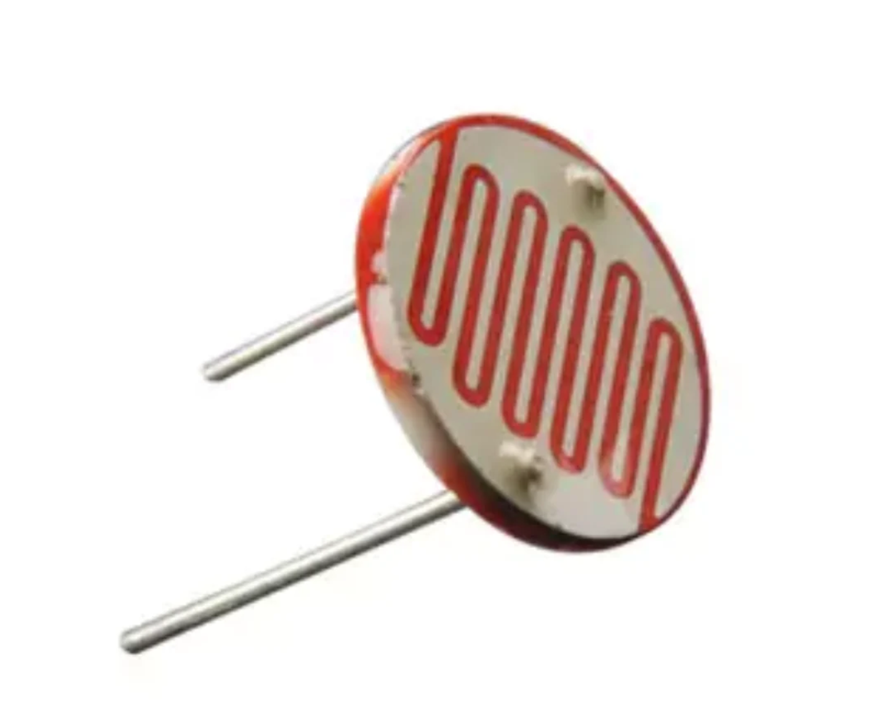
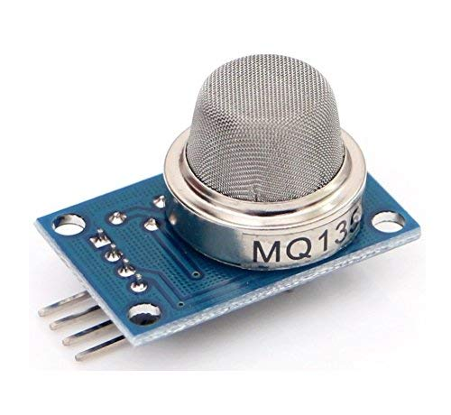
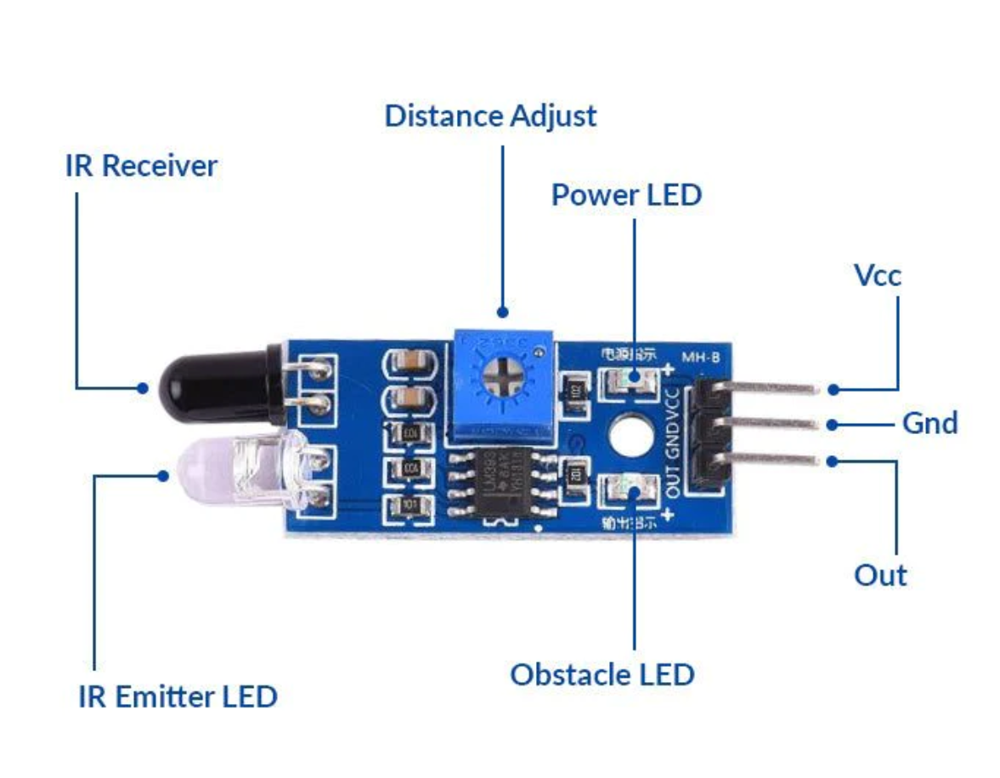

Sensors
✬ Sensors: Sensors are a kind of electronic components that detect the presence or absence of something. Depending upon the sensitivity of a sensor, it can also detect changes that happen with respect to time.
✬ Transducer : A transducer is a device that converts one form of energy into another, such as converting mechanical energy into electrical signals. On the other hand, a sensor is a device that detects and responds to a specific input, such as light, temperature, pressure, or motion and converts it into a measurable output.
Thus, we can understand that a Sensor is not a perfect sensor unless it is coupled with a transducer. Sensor detects whatever it has to detect and transducers then convert that recognized energy into a human readable and understandable data that we get as output.
Some common Sensors are in IoT ecosystem:-
1) LDR (Light Dependent Resistor) :
LDR are light sensitive devices most often used to indicate the presence or absence of light, or to measure the light intensity. It is also known as optical sensors .
Working of LDR Video
2) DHT (Digital Temperature and Humidity Sensor) :
The DHT sensor is a low-cost digital sensor for sensing temperature and humidity. This sensor is used in various applications such as measuring humidity and temperature values in heating, ventilation and air conditioning systems. Weather stations also use these sensors to predict weather conditions. The humidity sensor is used as a preventive measure in homes where people are affected by humidity.
 Woking of DHT Video
Woking of DHT Video
3) MQ 135 (Methane/CH4 Quality Sensor)
MQ 135 is also known as Smoke Sensor and Gas Sensor. It is used specifically for detecting presence of different gases. These sensors play a vital role in factories where chemical formulations are made. CO2 sensors, CO sensors, Breathalyzers, Air pollution sensors, hygrometers, smoke sensors etc. are different gas sensors. 
Woking of MQ1354) IR sensor ( Infrared Sensor)
IR sensor is a device that uses infrared technology to detect objects or changes in the environment. IR sensors can detect a wide range of physical properties such as temperature, motion, and proximity(Nearest). Proximity Sensors convert information on the movement or presence of an object into an electrical signal.
 Woking of IR Sensor5) Ultrasonic Sensor:
An ultrasonic sensor is an electronic device that measures the distance of a target object by emitting ultrasonic sound waves, and converts the reflected sound into an electrical signal. Ultrasonic waves travel faster than the speed of audible sound (i.e. the sound that humans can hear).
Ultrasonic sensors have two main components: the transmitter (which emits the sound using piezoelectric crystals) and the receiver (which encounters the sound after it has travelled to and from the target).
Types of Sensors are listed below :-
✬ Temperature Sensors: They measure how much heat is produced by an area or an object.
✬ Proximity Sensors: They find the presence or absence of objects nearby without physical contact.
✬ Infrared Sensors: Such sensors can either detect or emit infrared radiation. Hence, they are useful for sensing changes in the surrounding area.
✬ Water Quality Sensors: As the name suggests, these sensors monitor the quality of water.
✬ Chemical and Gas Sensors: They track the quality of air to identify any toxic or hazardous gas.
✬ Pressure Sensors: They spot any change in a gas or liquid. Additionally, pressure sensors raise an alarm when the pressure range exceeds a defined threshold.
✬ Smoke Sensors: Smoke detectors are very common in everyday use. Also, they have long protected our homes and places of business.
✬ Motion Sensors: These sensors monitor physical movement in an area.
✬ Gyroscope Sensors: A gyroscope sensor calculates the rotational speed around an axis measuring the angular rate or velocity.
✬ Image Sensors: They turn optical pictures into signals. Additionally, they are useful for electronic file storage or display.
✬ Humidity sensors: These sensors calculate the air’s water vapor content.
✬ Accelerometer Sensors: They can identify an object’s orientation and the rate of change like tapping. They can also sense shaking, and positioning.
✬ Level Sensors: They measure the presence of a variety of substances, such as liquids, powders, and grains.
✬ Optical Sensors: These sensors take light measurements and turn them into electrical impulses.